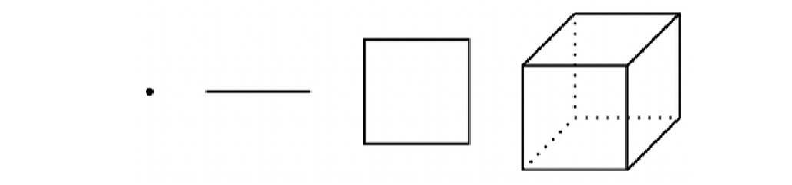

PSTAT 10 Data Science Principles
Lecture 3: Matrices and Arrays
![]()
August 30, 2026
Introduction
🔁 Review: Lecture 2
👈 Last lecture we started exploring data in R and its inbuilt functionality, specifically:
- Scalars
- Vectors
- Filtering and subsetting
- Named indices
- Vectorized functions
👀 Outline: Lecture 3
👇 This lecture we look into higher-dimensional data structures such as:
- Matrices
- Arrays
- Lists
Matrices
🔢 What is a Matrix?
\[ A:=\begin{bmatrix} 1 & 2 & 3 & 4 & 5 & 6 \\ 7 & 8 & 9 & 10 & 11 & 12 \\ 13 & 14 & 15 & 16 & 17 & 18 \\ 19 & 20 & 21 & 22 & 23 & 24 \\ 25 & 26 & 27 & 28 & 29 & 30 \end{bmatrix} \]
- Matrices are essentially 2-dimensional vectors.
- They are the building blocks of data science and machine learning.
- The mathematics of matrix manipulation is linear algebra.
- For the purposes of this course we introduce only some very simple linear algebra methods and demonstrate how to perform them in R.
- For anyone interested in studying linear algebra here are some resources:
- Linear Algebra Done Right by Sheldon Axler.
- Introduction to Linear Algebra by Gilbert Strang.
📐 Dimensionality
Dimension
- A vector of length \(n\) has dimension \((1\times n)\).
- A matrix with \(n\) rows and \(m\) columns has dimension \((n\times m)\).
Note this is different from the number of dimensions of the object, which is 1 for vectors and 2 for matrices.
Matrix Properties
- Matrices are atomic — all elements must be the same data type.
- Same coercion hierarchy as vectors: character > numeric > logical.
- Matrices support additional operations beyond vectors, such as transpose, element-wise operations, and matrix operations.
matrix() Function
We can define a matrix using the matrix() function:
The function arguments are as follows:
data— vector of the input data (defaults toNA)nrowandncol— scalars specifying number of rows and columnsbyrow— Boolean specifying row-wise or column-wise constructiondimnames— list containing two vectors of row and column names
Example — matrix() Function
We will construct a variety of matrices using the input data below:
Firstly let’s define a 3 by 3 matrix where the data is loaded row-wise:
🪞 Transpose
Let’s look more carefully at the two matrices from the last slide:
[,1] [,2] [,3]
[1,] 1 2 3
[2,] 4 5 6
[3,] 7 8 9 [,1] [,2] [,3]
[1,] 1 4 7
[2,] 2 5 8
[3,] 3 6 9- We see that these matrices are reflections of each other down the diagonal.
- Reflecting a matrix this way is known as transposing.
\[ A = \begin{bmatrix}a & b & c \\ d & e & f \\ g & h & i\end{bmatrix}\implies A^T=\begin{bmatrix}a & d & g \\ b & e & h \\ c & f & i\end{bmatrix}. \]
- R has an inbuilt transpose function
t():
🏷️ Row & Column Names
If we wish to add row and column names we can use the dimnames argument:
cbind() & rbind() Functions
Other ways to define matrices
Another way of defining matrices is by binding several vectors of the same length together.
There are two ways to combine vectors:
- Stacking the vectors row-wise (vertically) using
rbind() - Stacking the vectors column-wise (horizontally) using
cbind()
- Stacking the vectors row-wise (vertically) using
To demonstrate we define the following vectors:
- We can then combine these vectors into a matrix using either
rbind()orcbind():
[,1] [,2] [,3]
v1 "alpha" "beta" "gamma"
v2 "delta" "epsilon" "kappa"
v3 "phi" "psi" "nabla" v1 v2 v3
[1,] "alpha" "delta" "phi"
[2,] "beta" "epsilon" "psi"
[3,] "gamma" "kappa" "nabla"📌 Notice that the rows are named with rbind() and the columns are named with cbind().
🆔 Identity Matrix
In mathematics, a multiplicative identity is a number which, when multiplied by another number, leaves the other number unchanged.
- The identity matrix is the matrix equivalent of the multiplicative scalar identity
1. - The \(n\times n\) identity matrix, denoted \(I_n\), is a matrix with diagonal values 1 and all other values 0.
We can generate the identity matrix using the diag() function:
Indexing Matrices
🎯 Indexing Matrices
Recall Vector Indexing
- For vectors we can index elements using a single index value, e.g.
vec[3]returns the 3rd element ofvec.
Matrix Indexing
Every matrix entry is indexed by an ordered pair \((i,j)\) where:
- \(i\) is the row number, and
- \(j\) is the column number
\[ A = \begin{bmatrix}a & b & c \\ d & e & f \\ g & h & i\end{bmatrix}\quad\text{has index}\quad\underbrace{\begin{bmatrix} (1,1) & (1,2) & (1,3) \\ (2,1) & (2,2) & (2,3) \\ (3,1) & (3,2) & (3,3) \end{bmatrix}}_{index~matrix}. \]
Example — Indexing Matrices
Remember Matrix 1?
Consider matrix_1 from previous examples:
🔪 Slicing Matrices
Sounds dramatic!
Indexing a whole row or column is known as slicing the matrix.
To slice a matrix we leave the first / second index values blank to return the entire column / row.
- Note the difference from
Python, which uses:to slice.
- Note the difference from
Submatrices
- We can also index a submatrix by specifying a range of rows and columns using the
:operator.
✂️ Removing Matrix Values
Omitting values — or even whole rows and columns — of a matrix works the same way as omitting elements of a vector, using negative indices.
- For example we can remove specific rows or columns:
[,1] [,2] [,3]
[1,] 4 5 6
[2,] 7 8 9 [,1] [,2]
[1,] 1 3
[2,] 4 6
[3,] 7 9- Or multiple rows and columns:
💪 Exercise — Matrix Construction
03:00
Spend 3 minutes to complete the following steps:
- Create a \(5\times 4\) numeric matrix object named
num_matrixwith elements 1 through 20 (constructed row-wise). - Select the 3rd row of the matrix and save it to an object named
row3. - Select rows 3, 4 and 5 of columns 1, 2 and 3 of the matrix and save them to an object
new_matrix. - Determine the dimensions of
new_matrixusing thedim()function.
✅ Solution — Matrix Construction
Define the Matrix
Select Rows 3–5, Columns 1–3
Matrix Operations
🧮 Matrix Operations
R has many functions designed to interface with matrices:
rowSums()andcolSums()rowMeans()andcolMeans()dim()anddimnames()
det()— matrix determinantsolve()— matrix inverse%*%— matrix multiplication
We can also perform matrix multiplication using the %*% operator:
Arrays
🧊 What are Arrays?
Moving into higher dimensions!

- One might ask — can we consider higher dimensions?
- The array is the natural extension of the vector and matrix, and can be extended to arbitrarily large \(k\) dimensions:
\[ n_1 \times n_2 \times ... \times n_k. \]
Defining Arrays
Don’t get too excited!
In PSTAT 10 we only consider up to 3-dimensional arrays.
We can create an array using the
array()function, which has similar arguments to thematrix()function:
The arguments of the
array()function are:data— the input data (scalar, vector, matrix)dim— array dimensions (vector)dimnames— array dimension names (list)
Example — Defining Arrays
We can define a \(2\times 2 \times 2\) array using the following code:
Indexing extends naturally from matrices: instead of \((i,j)\) we now index with \((i,j,k)\), one subscript per dimension:
- You can see how this can naturally be extended to higher dimensions.
- Just be aware of the exponential growth in the number of elements as the number of dimensions increases.
🔁 Functions Over Arrays
We can apply operations (mathematical operations, functions) over an array using the apply() function:
X— the array object on which we are applying our operationMARGIN— vector giving the subscripts for which the function will be applied overFUN— function to be applied
💪 Exercise — Constructing Arrays
03:00
For the next 3 minutes create a basic array to represent the faces of a solved two-color Rubik’s cube (each color appears on 3 of the cube’s six faces).
- Define the matrices
redandblueas \(3 \times 3\) matrices where all entries are the character"r"and"b"respectively. - Construct an array using the
redandbluematrices that represents the faces of the solved cube.
Hint: one of your array dimensions should refer to the cube’s 6 faces.
✅ Solution — Constructing Arrays
Define the Face Matrices
Assemble the Cube
Stack 3 copies of red and 3 copies of blue along a third dimension representing the cube’s 6 faces:
Lists
🗂️ What is a List?
- Lists are a flexible data structure that can contain multiple data types and even multiple data structures.
- They are similar to dictionaries in
Python.
- They are similar to dictionaries in
- Each element of a list can be named and accessed using the
$operator. - What we gain in flexibility we lose in computational efficiency and mathematical tractability.
- Only numeric data types with regular structure (vectors, matrices, arrays) can be used in mathematical operations.
Example — Lists
To construct an example list we first define three objects to store: (1) a character vector; (2) a numeric matrix; and (3) a logical scalar.
🔓 Indexing Lists
The key difference between indexing lists and the other data types we have considered is that to index list elements we use double braces list_example[[...]].
Summary
✅ Topics Covered
🤔 Today we studied lots and lots of topics:
- Matrices
- Matrix Operations
- Indexing
- Arrays
- Lists
📅 Next Class
🤩 Next class we continue our introduction by exploring multi-dimensional datatypes including:
- Functions
- Branching
- Loops
- Control Flow